שבוע בכרתים- לא רק בטן גב והכל כלול
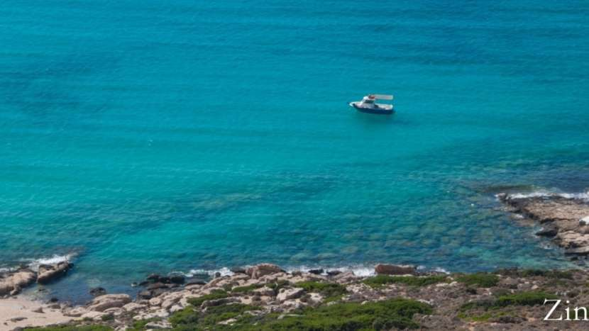
כמו תמיד, חצי שנה מראש התחלתי לחשוב על יעדים לטיול לחגי תשרי 2017, אולם בגלל אילוצים נאלצנו לוותר (צפון נורבגיה בקראוון יחכה לפעם הבאה) ולחשוב על יעד חלופי ביולי אוגוסט (העונה הכי בעייתית בשנה).
חשבנו על אירופה, אולם רק המחשבה על לצעוד באתרי טבע יפים עם עוד מיליון אנשים גרמו לי לוותר. עלתה אפילו הצעה לבטן גב בזנזיבר אולם גם היא ירדה מהפרק (שבוע שלם להיות במקום אחד בשבילי זה גהינום).
בעלי לחץ על יעד קרוב ונגיש אז התחלנו להתעניין ביוון וכך הגענו לכרתים. אי גדול, חופים יפים, במרחק שעה טיסה נשמע מעולה, אולם אז צצה המחשבה על כל האגאדו שצפוי לנו בעונה זו של השנה...לכן יצאתי לתחקיר מעמיק וגיליתי שכרתים זה לא רק בטן גב, יש המון דברים שאפשר לעשות באי! וככה התגבשה לנו תכונית לטיול של שבוע שמשלב בטן גב וטיולים. הזמנו כרטיס טיסה (דרך ישראייר) בעלות של 330 $ לאדם (קצת יקר אבל ככה זה ביולי אוגוסט), שכרנו רכב (דרך חברת Goldcar) בעלות של 1000 ש"ח לשבוע (סקודה פאביה)- גם יקר אבל שוב, יולי-אוגוסט, ויצאתי לחפש מלונות ברחבי הרשת.
בגדול אפשר לעשות טיול מתגלגל בכרתים (ואפילו כדאי), כלומר לשכור רכב ובערב לחפש לינה בהתאם לאיפה שתהיו, יש שפע של היצע. היות ורצינו גם קצת פינוק החלטתי בסוף להזמין 2 מלונות בלבד- אחד מהצד המזרחי של האי והשני בצד המערבי. סגרתי את ההזמנות דרך BOOKING בניתי לנו מסלול ואנחנו מוכנים לצאת לדרך!
יום 1- 21.7.17- איוס ניקולאוס
הטיסה שלנו יוצאת בשמונה בבוקר מנתב"ג, כמובן שיש עיכוב (כי אין שער יציאה פנוי) וכך רק בשעה 10:00 אנחנו ממריאים.
אחרי טיסה קצרצרה אנחנו נוחתים בנמל התעופה הרקליון (הבירה של כרתים) וכבר מקדם את פנינו הכחול של הים התיכון שנראה כבר ממסלול הנחיתה. יורדים מהמטוס ועולים לאוטובוס לטרמינל- שנוסע בדיוק מטר (חסך לנו 5 צעדים עד הטרמינל), חום כבד מכה בנו (בדיוק כמו החום שעזבנו בארץ), ואנחנו נחושים למצוא חנות שמוכרת סים מקומי כדי שנוכל לנווט עם הרכב. ביציאה מהשדה יש ריכוז של סוכנויות תיירות ונהגי מוניות ואוטובוסים שייקחו אתכם ליעדכם אבל אין שום זכר לקיוסק כלל וקיוסק שמוכר סים מקומי בפרט. טוב, לא נורא בסוף נמצא. אנחנו צועדים לאזור השכרת הרכבים ומחכים לשאטל שייקח אותנו לחברה שלנו (Goldcar), שאכן מגיע אחרי 5 דקות המתנה.
משרדי החברה ממוקמים 5 דקות נסיעה מהשדה, אנחנו ממלאים פרטים, עושים ביטוח אקסטרה לרכב, נותנים לנו רכב חדש-דנדש (3000 ק"מ בסך הכל), הנציג שאול אותנו איזה צבע אנחנו מעדיפים לבן או אדום, אני מיד חושבת שאדום כי ככה נוכל לזהות אותו בקלות (איזה הפתעה ציפתה לי כשכמעט כל רכב השכרה שני בכרתים היה בצבע אדום).
ליד משרדי חנות ההשכרה יש קיוסק, אנחנו מיד מצטיידים בסים מקומי ונשנושים ויוצאים לדרך.
היעד שלנו הוא העיירה איוס ניקולאוס (Agios Nikolaos) שנמצאת הצד המזרחי של האי. לפי גוגל מדובר בנסיעה של שעתיים, בפועל לוקח שעה ועשרים.
בכרתים יש כביש אחד ראשי המחבר את הצד המזרחי עם הצד המערבי ככה שגם אם אין לכם GPS אין סיבה להסתבך. גם השילוט בכבישים מעולה. כרתים עצמה היא מאוד הררית ככה שמצד אחד נשקף הים ומהצד השני הרים נישאים, ובכל מקום ים כחול טורקיז ושדות של עצי זית.
בשעה 14:00 אנחנו מגיעים לעיירה ומחליטים לחפש מקום לאכול (לפני שניסע להתמקם במלון). העיירה מקסימה. צד אחד של העיירה יושב על צלע הר שממנו נשקף נוף משגע על הנמל והאגם ((lake Voulismeni שהוא אחת מהתופעות המיוחדות והמעניינות ביותר בעיר- האגם הוא טבעי. בעבר היו בו מים מתוקים, ובמאה ה-19 הוא חובר בתעלה לנמל של העיר ואל הים הפתוח. אורכו הוא 137 מ' ועומקו המקסימלי הוא 64 מ'. לא מעט סיפורי עם ואגדות אורבניות נרקמו בעקבות האגם, רובן בשל העומק המרשים של הקרקעית. סביב לאגם נבנתה גדה מסודרת שמאפשרת גישה נוחה וקרובה אלי, כל זה טוב ויפה, אבל מה, חניה אין! הכל תפוס. אחרי מספר סיבובים מצאנו שהיוונים הבינו את הפותנציאל התיירותי ופתחו חניונים בתשלום בכל פינה. ליד חניון כזה ראינו פתאום שיש מקום פנוי (לא בחניון) ומיד חנינו שם, היווני כמובן ניסה לשכנע אותנו שזה מקום שנותנים בו כנסות כדי שנחנה אצלו בחניון, אבל לצערו אין במקום שום שילוט שאוסר חניה ככה שחנינו בכיף והלכנו לחקור את העיירה.
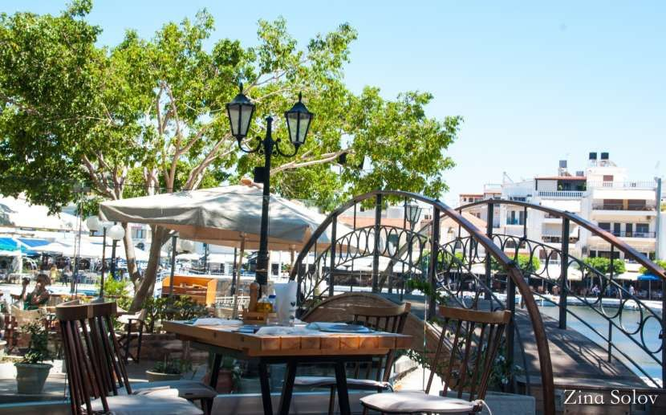
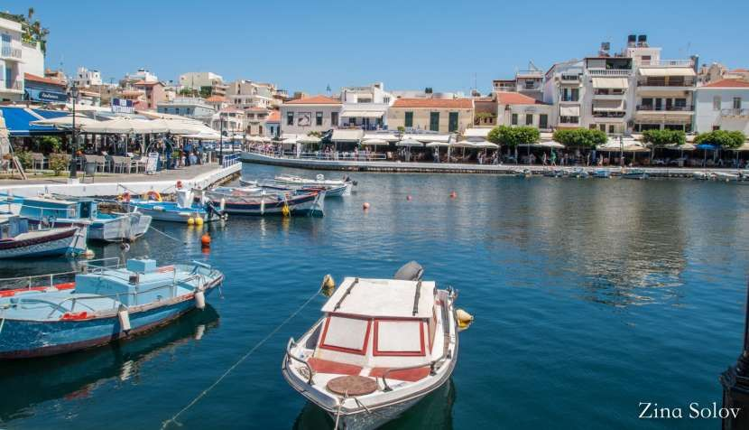
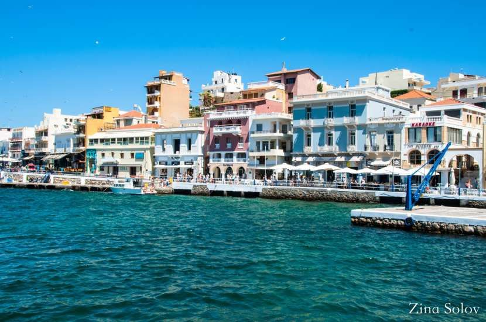
מרכז העיירה ממש קטן כך שאפשר לטייל שם בחצי שעה. אנחנו הלכנו לאגם שסביבו יש המוני מסעדות נחמדות (יש גם מדרגות לעלות לתצפית מראש האגם- ממש יפה), בחרנו אחת והתיישבנו לאכול צהריים, החלטנו לטעום מהמאכלים המקומיים והזמנו סרדינים מטוגנים עם יוגורט (צ'זיקי)- טעים מאוד. אחרי ששבענו, טיילנו קצת סביב הנמל, שבעים ומרוצים נסענו למלון.
המלון שהזמנו הוא Minos beach art hotel, מלון 5 כוכבים מפנק ביותר שיושב על מפרץ כרבע שעה הליכה ממרכז העיר. הזמנו גם חדר משודרג- וילה beach front. המלון די גדול, כך שיש קצת הליכה מהלובי עד החדר. אז אחרי נסיעה קצרה בבאגי הגענו לוילה שלנו, ואיזה נוף.... המרפסת שלנו צופה על החוף, מים טורקיז שקופים שרק מזמינים אותך להיכנס...הדלת החיצונית שקופה ככה שניתן לשכב במיטה וליהנות מהנוף המשגע.
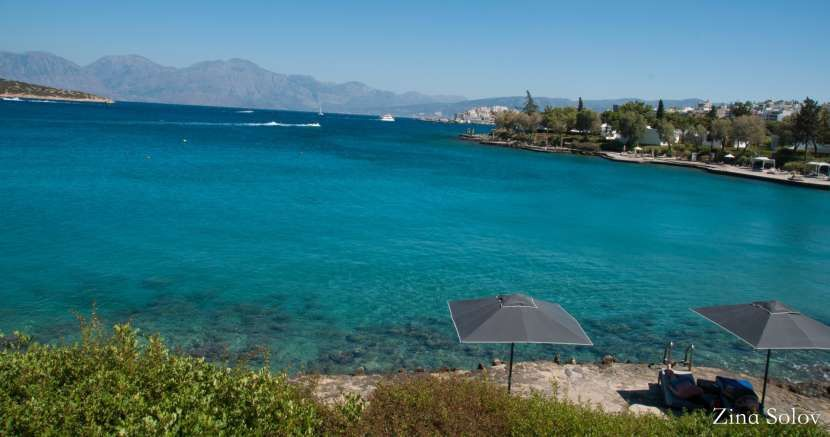
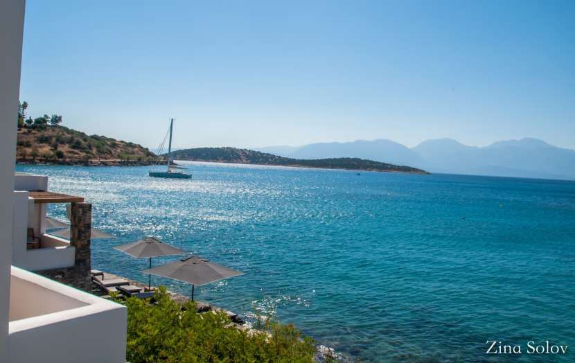
אנחנו לא בזבזנו זמן, מיד החלפנו לבגדי ים וקפצנו למים. המים קפואים! אבל צלולים במידה שלא תיאמן, יש שם גם שונית קטנה שאפשר לשנקרל, רק מה, החוף סלעי אז כדאי להביא נעליים.
אחרי שחייה ומנוחת ערב, חזרנו לעיירה לחפש מקום לאכול ארוחת ערב, כאמור לא חסר מקומות, אולם חיפשנו משהו יותר אותנטי, עם אוכל ביתי ופחות מסחרי, ומצאנו כזה, או ליתר דיוק בעלי מצא- הוא תמיד מסתכל מי יושב במסעדה ואם אלו מקומיים אז שווה להיכנס (אם רק תיירים זו בטח מסעדה תיירותית פחות טעימה ויותר יקרה).
המסעדה נקראת- To Pareaki כתובת: 12, Akti Kovndovrov srt. Agios Nikolaos. מדובר במסעדה משפחתית עם אווירה נעימה ואוכל מדהים! המוסקה שלהם פשוט אלוהית! שלא לדבר על הממולאים, הדגים והקינוחים. עזבו אתכם מסעדות תיירותיות עם נוף יפה, לכו לשם כדי לאכול טוב! שבעים ומרוצים התגלגלנו חזרה למלון.
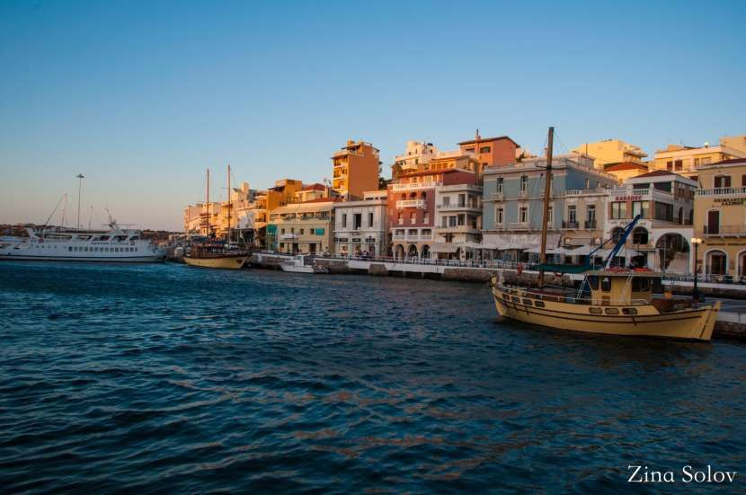
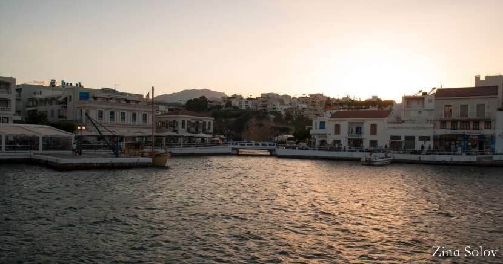
יום 2- 22.7.17- אלונדה ואי המצורעים
התחלנו את הבוקר בשחיית בוקר, אין כמו מים קרים כדי להתעורר :), אחרי ארוחת בוקר מפנקת במלון, אנחנו יוצאים לכיוון העיירה אלונדה ואי המצורעים ספינולונגה. גם אני קראתי את הספר ה"אי של סופיה" על אי המצורעים ספינולונגה, אז איך לא נבקר שם?
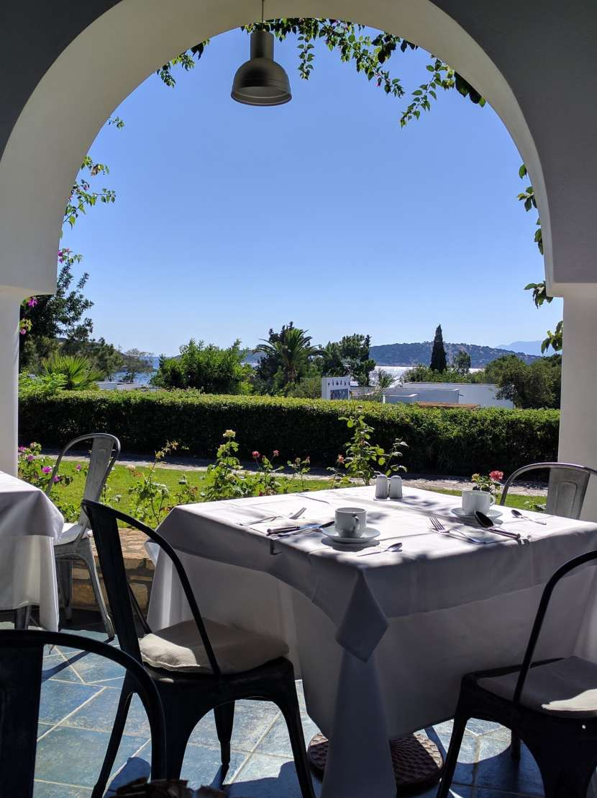
הנסיעה לאלונדה לקוחת עשרים דקות, הכביש מתפתל בין עיירות קטנות, מלונות וחופים מדהימים.
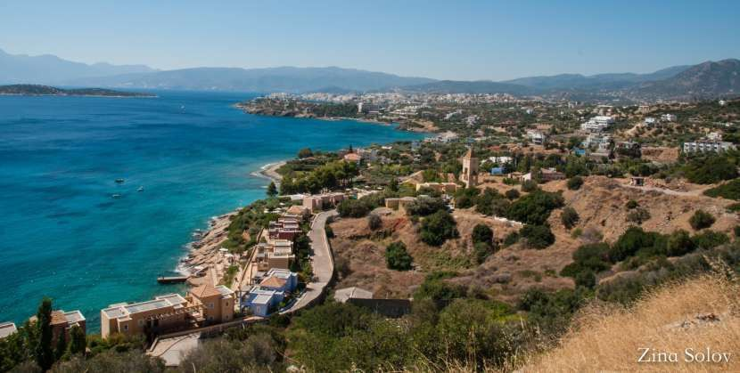
אחרי מספר עצירות לתצפית וצילומים בדרך, אנחנו מגיעים לעיירה, מצטיידים בכובעים קונים כרטיסים להפלגה לאי (מוכרים כרטיסים בנמל, שם יש גם חניה בתשלום של 3 יורו ליום). עלות השייט הוא 10 יורו לאדם והוא יוצא כל חצי שעה.
השייט מאלונדה די נינוח היות ולא באמת יוצאים לים הפתוח אלא שטים במפרץ, השייט אורך כ-20 דקות, בזמן הזה קשה להתאפק שלא לקפוץ למים הצלולים. כשמתקרבים לחוף מכה בנו רוח מטורפת, עד כדי שאני מתחילה לחשוש שמה נתהפך (בעיקר החשש הוא לציוד האלקטרוני, לא הייתי מתנגדת לטבילה בחום השורר בחוץ).
הסירה עוגנת בנמל קטן, שבו כבר ממתינים תיירים כדי לחזור חזרה לעיירה. טיפ חשוב- הצטיידו בכובע ומים. האי חשוף לשמש, ויש במקום רק קיוסק אחד שמוכר מים/מיצים שנמצא ממש ליד מעגן הסירות. למי שתוהה יש גם שירותים, ליד הקיוסק. האי מוגדר כאתר מורשת ולכן הכניסה אליו תשלום של 8 יורו לאדם. האי מעגלי כך שזה ממש לא משנה מאיזה צד תתחילו את הסיבוב.
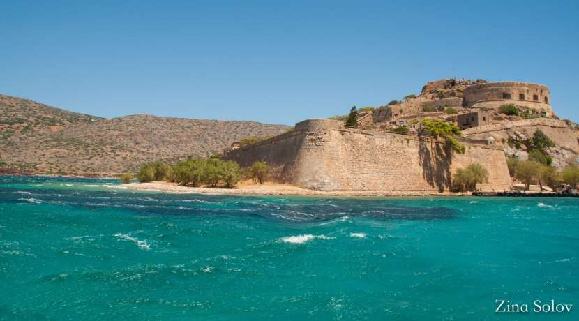
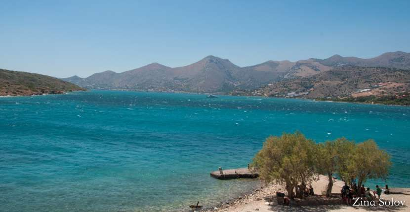
הונצאיניםששלטו באזור קראו לו כי הוא דומה לקוץ (spina) ארוך (longa) הם גם קראו כך לאי בצורה דומה בוונציה (כיום-ג'ודקה) כדי להבדיל בין שני האיים קבעה ממשלת יוון את השםקאלידון אך השם הקודם עדיין פופולרי ביוון ומחוץ לה).
ספינלונגה נמצא בקצהו שלחצי איספינלונגה הגדולה, בעבר הוא היה מחובר ליבשה אבל הוונציאנים שהשתלטו על המקום בעיקר בגלל מכרות מלח, ניתקו את האי מהיבשה ובנו עליו ב-1578מבצר גדול הקיים עד היום. בשנת1630היו במבצר 35תותחים. בשנת 1903 החלו ללוח לאי חולי צרעת וכך עד 1950. עם תחילת השימוש בתרופות יעילות נגד הצרעת פסקו החולים להיות מדבקים ופסק הצורך לבודדם. משנת1950לא נשלחו יותר חולים לאי. החולה האחרון עזב ב-1957. האחרון שעזב את האי היה הכומרבשנת1962בהתאם למסורתהכנסייה היוונית-אורתודוקסיתהאומרת שיש לעלות לקברו של המת עד לאחר חמש שנים ממותו.
כיום, בשל תולדותיו המורכבות, הפך האי לאתר תיירות חשוב. אולם אל תצפו ליותר מידי שילוט או הדרכה (ניתן לשכור מדריך שילווה אתכם בסיור אבל לדעתי זה מיותר המקום די מדבר בעד עצמו).
אנחנו מטיילים על החומות מהן נשקף הים, מטיילים בין בתים הרוסים וגפנים, נמל קטן, השקט מדהים (אם נסנן את התיירים), נסו לדמיין איך זה לחיות באי הזה, במטווחי עין מהחוף עם ציווליזציה אך מנותקים לגמרי.
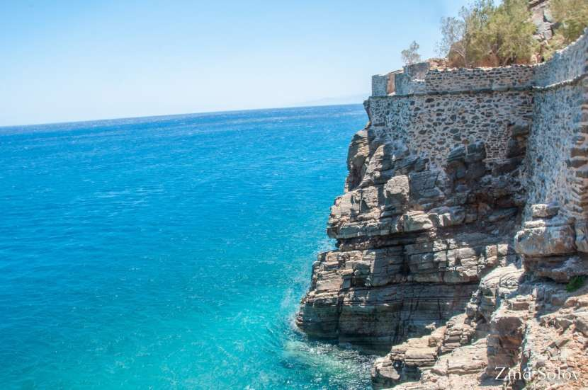
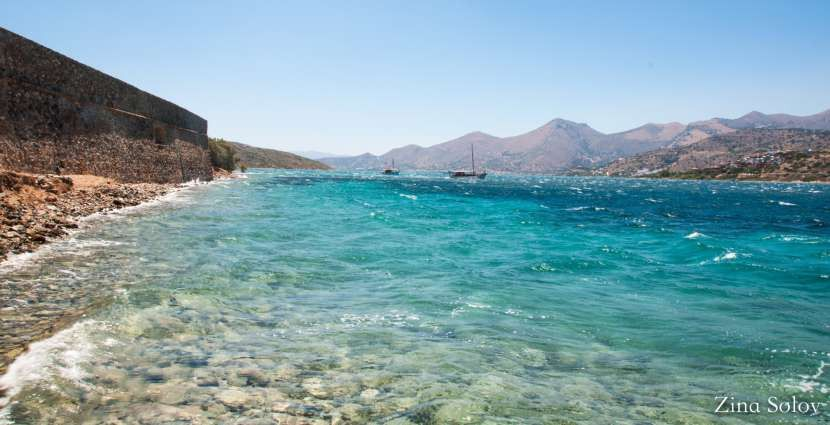
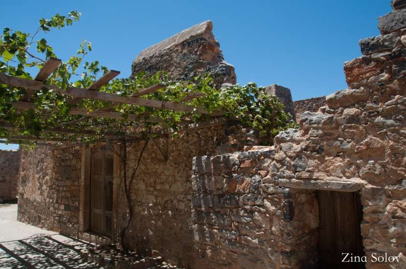
אחרי כשעה די מיצינו את האי, אז חוזרים לנמל להמתין לסירה שתיקח אותנו חזרה לאלונדה (שימו לב כשיורדים מהסירה אומרים לכם מתי היא חוזרת לקחת אתכם, אל תפספסו אחרת תצטרכו לחכות לסירה הבאה - שגם בעונת שיא מגיעה כל שעה ככה).
כשאנחנו חוזרים לאלונדה אנחנו אוכלים צהריים באחת המסעדות ליד הנמל, עם נוף לים ומוזיקה יוונית, אחרכך עושים קצת סיבוב בעיירה ובחנויות המזכרות ומצטיידים בנעלי שחיה ומסיכות שנורקל. משם אנחנו חוזרים למלון לבטן גב ושנירקול כמובן.
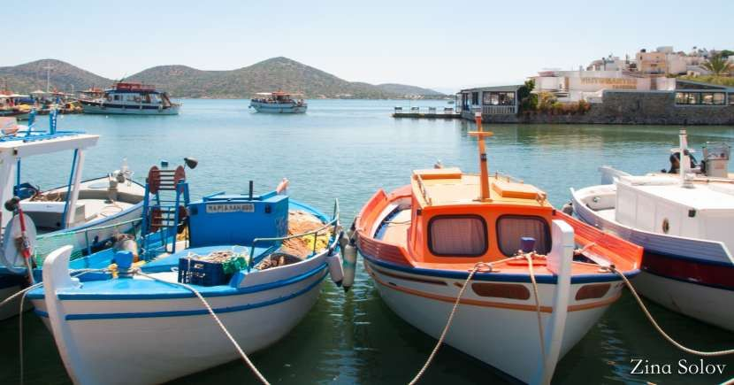
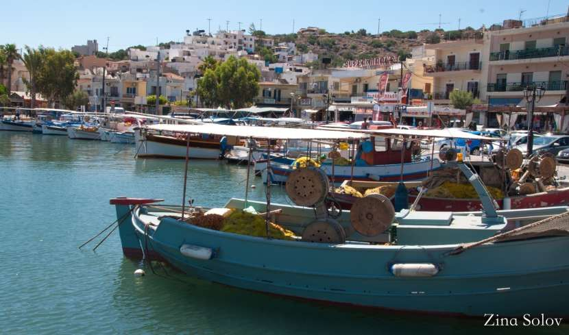
בערב החלטנו ללכת ברגל למרכז העיירה (איוס ניקולאוס), הליכה נעימה לאורך החוף שאורכת כ-15 שעה. הפעם אנחנו שמים פעמינו למסעדה שראינו אתמול שנראתה מגניבה, המסעדה נמצאת ליד הכנסייה של העיירה על הגבעה ממש סמוך לחוף.
מדובר במסעדת דגים, בכניסה למסעדה יש סירה ובה שלל הדיג היומי, אתם בוחרים דג ומכינים לכם במקום. המסעדה מהממת, מעוצבת מאוד יפה ומאוד פופולארית היות והיא הומה אדם. והאוכל? מעולה!!! המסעדה נקראת Pelagos כתובת: Strat. Koraka & Katehaki 10, Agios Nikolaos
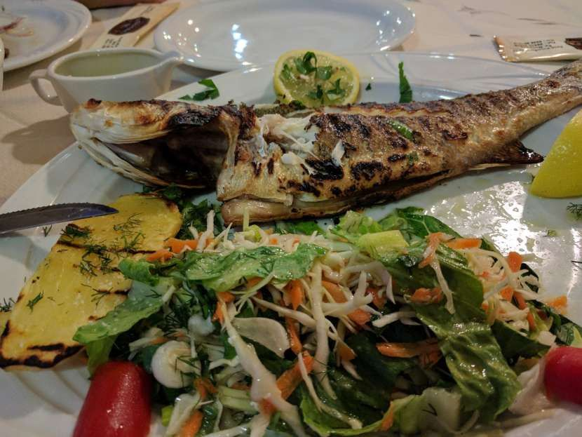
יום 3- 23.7.17- בטן גב במלון
היום אנחנו מחליטים פשוט ליהנות מהמלון ומהחוף המדהים. במקור תכננתי לנסוע למערת זאוס או לחוף ואי (Vai), אך בסוף המלון היה כלכך מוצלח שהחלטנו לנצל את שהותנו עד תום. היום הוקדש למנוחה תרתי משמע, שחייה, שנירקול, ספר, אוכל וחוזר חלילה.
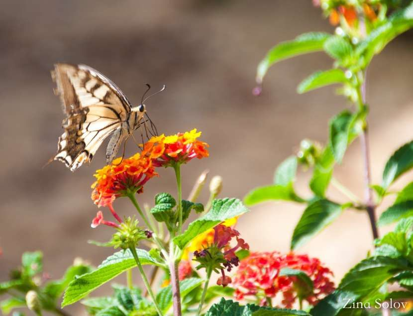
יום 4- 24.7.17- נוסעים מערבה
היום אנחנו מדלגים לצד המערבי של האי, אחרי טבילה אחרונה במים המדהימים של המפרץ במלון, ואחרי ארוחת בוקר מדהימה כרגיל, אנחנו נכנסים לאוטו ומתחילים בנסיעה מערבה. כמו שציינתי קודם יש כביש אחד שמחבר את הצד המזרחי עם המערבי.
התחנה הראשונה שלנו היא העיירה Agia Pelagia, קראתי שיש שם חוף מדהים. הירידה לחוף אכן מרשימה, אנחנו עוצרים במעלה הגבעה לתצפת על המפרץ הנגלה אלינו עם מי הטורקיז, משם יורדים לעיירה. יש שפע של מלונות מכל הסוגים סביב המפרץ, והאמת המקום נמצא 20 דקות מהשדה כך שכול לשמש אחלה מקום לדיל "הכל כלול". אולם כאן נכונה לנו אכזבה, החוף פשוט עמוס עד אפס מקום בתיירים, ובינינו, אחרי החוף של המלון הקודם שלנו, אין מה להשוות. כך שאנחנו מקנחים לנו בשייק פירות טעים וממשיכים מערבה.
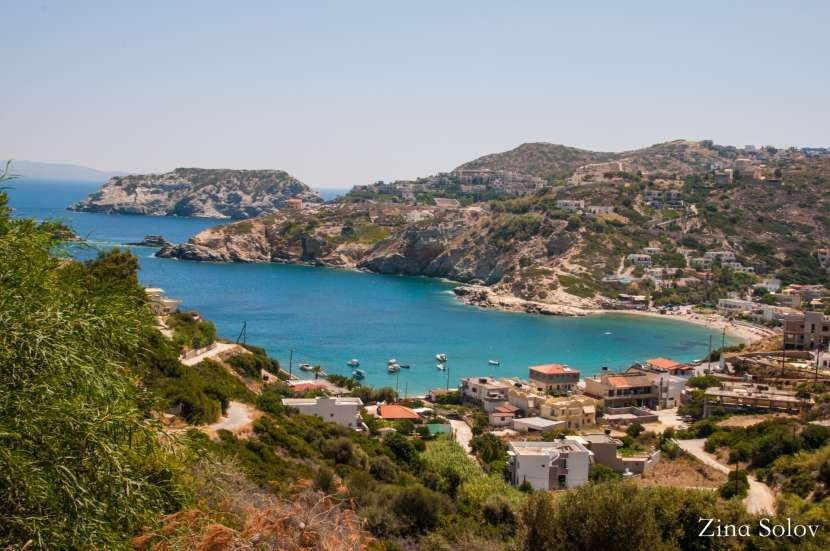
תכננתי לעצור גם בעיירה Bali אולם אחרי האכזבה של Agia Pelagia החלטנו לוותר, כך שראינו את העיירה מהדרך.
העצירה הבאה שלנו היא בכפר Argiroupolio, כפר קטן שנמצא בהרים. איך הגענו עד לשם? קראתי בהמלצות ששווה לעצור שם לצהריים בגלל המוני המפלים שיש באזור שהוסבו לתחנות קמח ומסעדות. לפני שנכנסים לכפר יש פניה ימינה (יש שלט שמכוון למפלים) ולאחר 2 ק"מ מגיעים למפלי המים. המקום יפיפה, נמצא בהרים ומוקף עצים, מבחר רב של מסעדות, מי שרוצה יכול לעלות במדרגות עד לעיירה עצמה שמצאת במעלה ההר ולטייל שם בין הבתים החמודים.
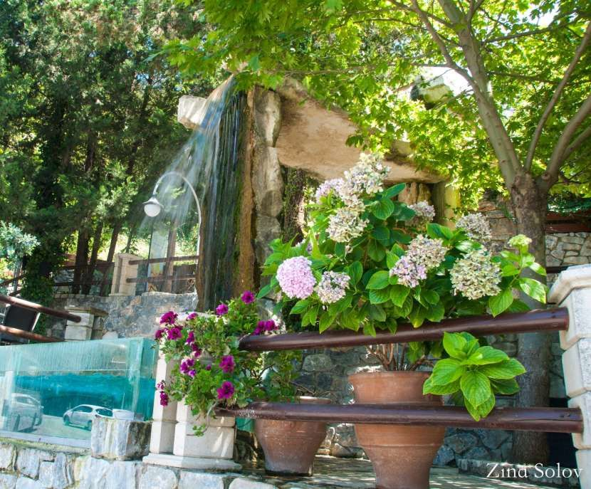
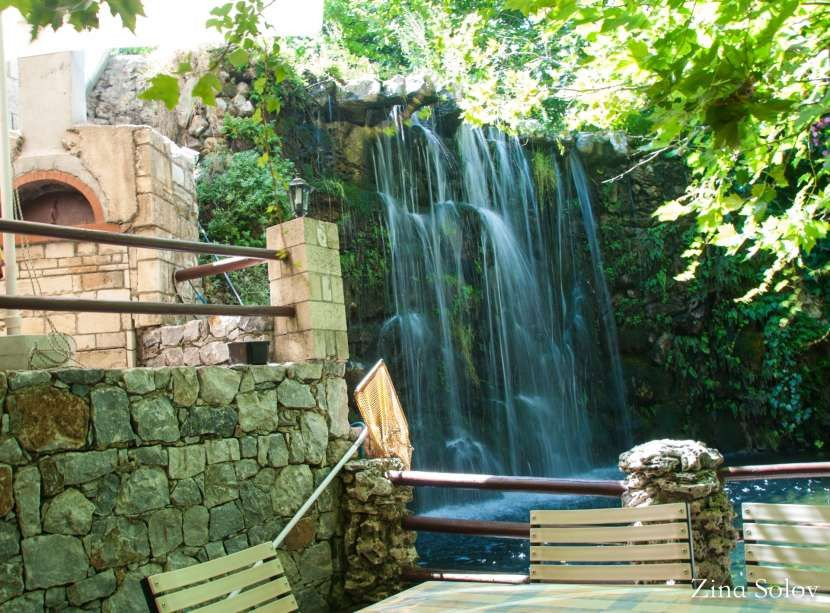
אחרי ארוחת צהריים מצוינת, אנחנו ממשיכים לתחנה הבאה שהיא אגם קורנה- Kourna. מדובר באגם ענקי כשיש מספר כניסות אליו- ניתן לרדת אליו מההרים וכך לראותו עוד מלמעלה, אנחנו הגענו דווקא דרך החוף. פשוט תיסעו בעקבות השילוט. המקום הומה טברנות וחנויות מזכרות. למי שרוצה ניתן להשכיר סירות פדלים לשעה בעלות 7-10 יורו. ניתן גם לשחות באגם, מימיו צלולים, אולם כדאי שתביאו נעליים כי יש קצת אבנים ואצות במים. אנחנו הגענו לשם בסביבות 4 אחר הצהריים ביום לוהט (38 מעלות), לא היינו מוכנים לאפשרות של שחייה (ודי התעצלנו להוציא בגדי ים מהאוטו) כך שהסתפקנו בגלידה ושיטוט קצר סביב האגם. אם אתם מגיעים ביום חם, אל תוותרו על הצטננות במים. למי שמתכנן עצירה נחמדה בחיק הטבע מומלץ מאוד.
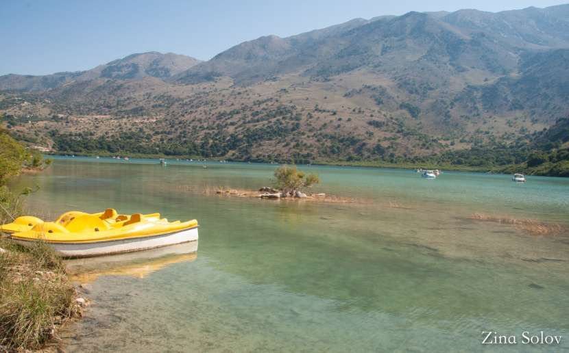
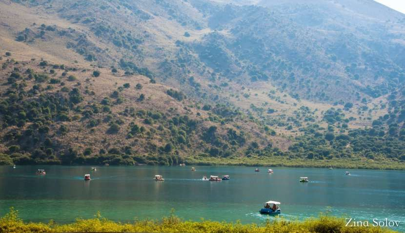
משם אנחנו כבר עייפים אז החלטנו לנסוע ישירות למלון. המלון שלנו נמצא בכפר קטן בשם Spillia (חצי שעה מערבה לחאניה). בכוונה לקחתי מלון פשוט כי תכננתי שהמלון יהווה נקודת מוצא לטיולים יומיים באיזור (וכי המלונות בחאניה היו יקרים בטירוף בעונה זו). לקראת השעה שש הגענו לכפר (כפר קטנטן ושקט), המלון עצמו בנוי בסגנון וילה טוסקנית עם המון גפנים ובנייה עתיקה (ממש חביב), יש שם בריכה והטברנה של הכפר נמצאת 2 דקות הליכה משם.
ביום חם כזה בא לנו בכל זאת טבילה בים, ולכן הנציג בקבלה ממליץ לנו על מספר חופים שווים באיזור (Afrata שנמצא ממש קרוב ו-Elafonsi שנמצא כשעה וחצי נסיעה). החלטנו לבדוק את אפראתא, אולם בגלל שהיה מאוחר יחסית חששנו מלנסוע בחושך (הכביש עובר ממש על צוק), כך שהסתפקנו בטבילה בחוף הסלעי של העיירה Kolymvari שנמצאת ליד הכפר שלנו ומהווה בעצם עיירת חוף טיפוסית.
את ארוחת הערב אכלנו במסעדת המלון, היינו עייפים מאד מהיום החם והנסיעה הארוכה כך שפרשנו לישון מוקדם.
יום 5- 25.7.17- כמעט כמו בתאילנד
קמנו מוקדם, אכלנו ארוחת בוקר צנועה במלון (לא הפינוק של המלון הקודם, אבל סביר בהחלט), ומצוידים בבגדי ים אנחנו נוסעים לחוף Elafonisi. החוף נמצא בצד הדרום מערבי של כרתים, כשעה וחצי נסיעה מהמלון (לפי הוייז).
הדרך לחוף היא חוויה בפני עצמה. בהתחלה נוסעים מערבה לאורך החוף ואז פונים שמאלה לכיוון ההרים ומתחילים לטפס. הכביש עובר דרך עיירות קטנות ומקסימות, ופתאום נגלה לעינינו קניון מקסים, עצרנו לצילום והפסקונת.
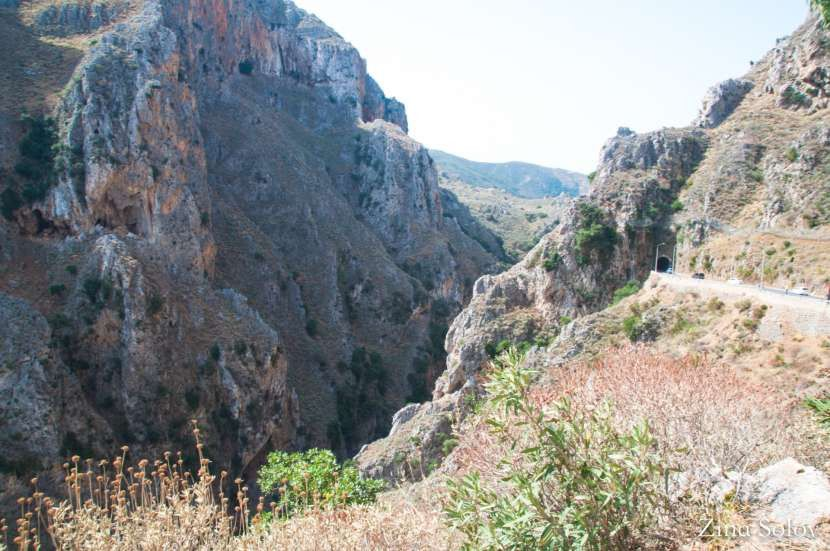
משם הכביש עובר דרך מנהרה ושוב ממשיך להתפתל בין העיירות הציוריות בהרים. לאחר כשעה וקצת מעפילים לפסגה ורואים את החוף המערבי של האי.
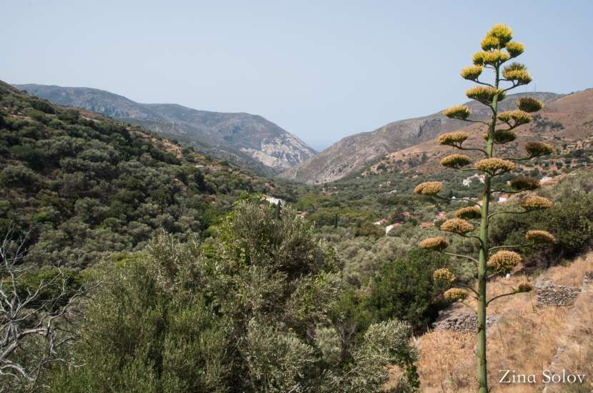
הגענו לחוף בשעה 12:00 והוא היה הומה אדם, אבל אל תתנו לכמות האנשים להרתיע אתכם, החוף ענקי כך שתמיד תוכלו למצוא פינה לשבת. המלצה חמה- תבואו איתכם מחצלת ושמשיה כך לא תהיו תלויים בחסדי הגזלנים המקומיים שרק מחכים לתיירים למכור להם מיטה ושמשיה.
אז כמו שאמרתי החוף פשוט מהמם. המים בצבע טורקיז, צלולים כמו זכוכית וקרירים מאוד (ביום חם כמו זה- 38 מעלות זו הצלה) החוף לבן, מי אמר שצריך לנסוע לתאילנד? החוף הזה אולי אפילו יותר יפה.
ישנם מספר אזורים לחוף- יש צד של גלישת רוח, שם החוף גם קצת סלעי, יש את הלשון יבשה שנכנסת למים והוא בעצם שמורת טבע (אתם יכולים ללכת לטייל שם, יש תצפית מדהימה על כל החוף) וכמובן לאורך קו החוף תמצאו מלא מיטות שיזוף ושמשיות. יש גם מספר קיוסקים ושירותים בחינם (עם תור ארוך מאוד) ושירותים בתשלום (10 סנט) עם תור ממש קצר.
שהינו בחוף כשעתיים עד שהרגשנו שדי מיצינו (אנחנו לא כאלה רבצני חופים), הלכנו לתצפית קצרה על החוף, ומשם החלטנו לטייל עם הרכב בסביבה.
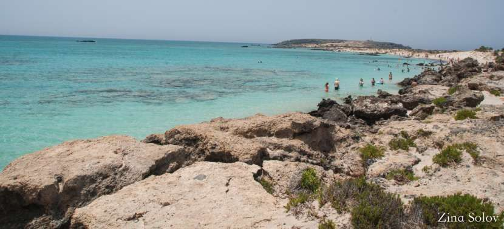
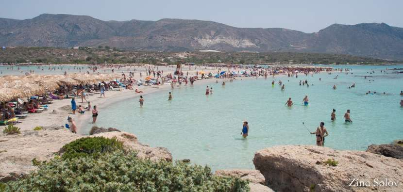
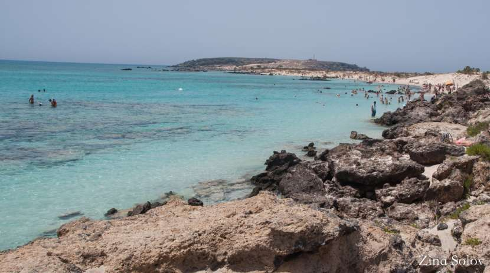
פרט להרבה כבשים וחוף סלעי ולא יפה לא מצאנו משהו מעניין בסביבה, למרות שקראתי טיפ על חנות לעבודות עץ בסביבה, אבל קרקורי הבטן הזכירו לנו ששעת צהריים כבר עברה וזה הזמן לאכול. החלטנו דווקא לאכול באחד הכפרים שראינו בדרך מאשר באחת המסעדות שעל החוף, ואכן בדרכנו חזרה עצרנו לאכול במסעדה חביבה עם נוף יפיפה של ההרים והסביבה. שבעים ומרוצים חזרנו למלון למנוחה קצרה.
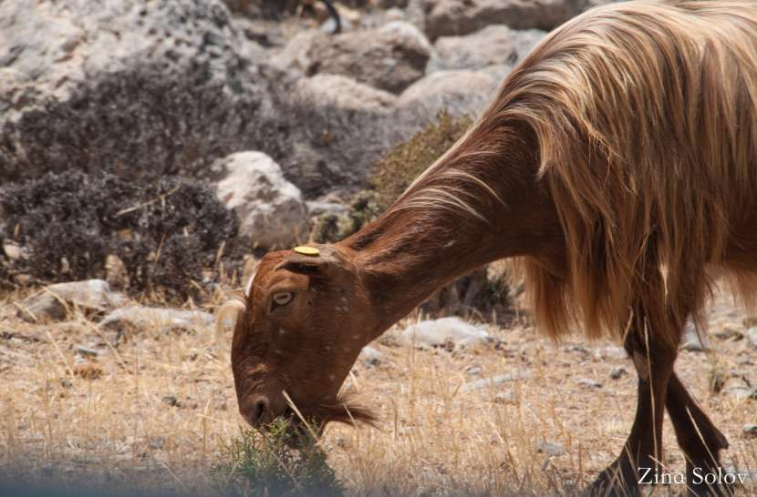
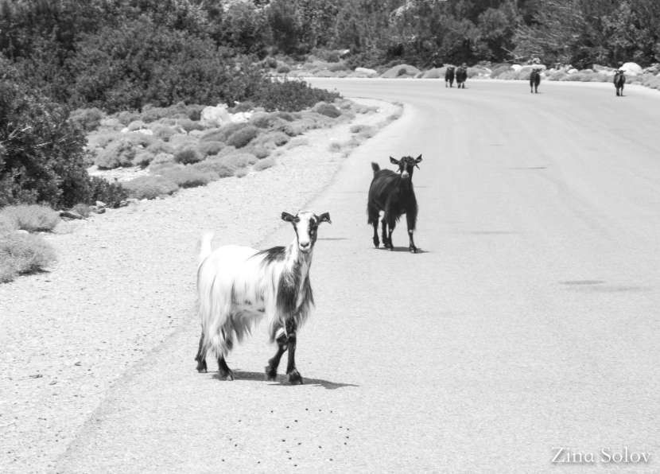
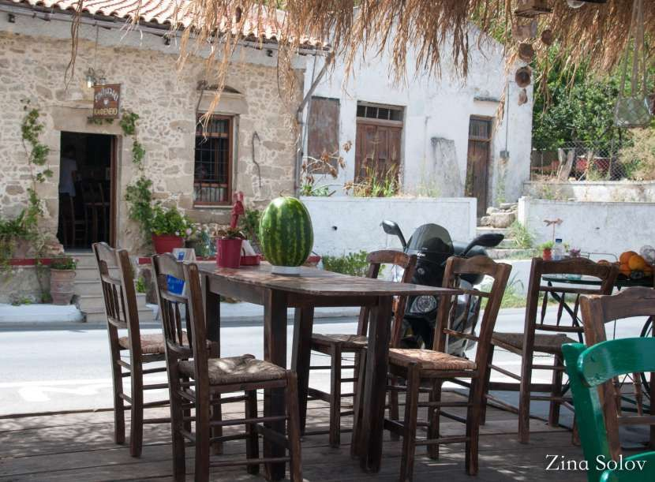
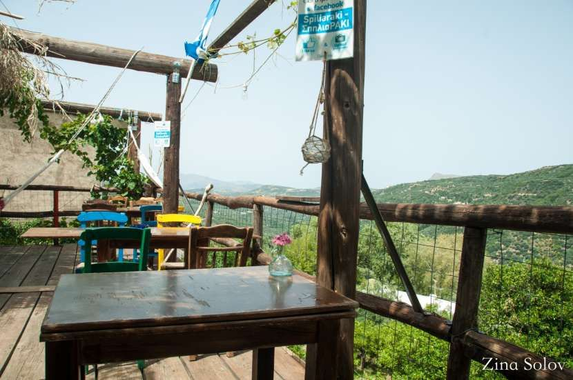
לקראת הערב החלטנו לבקר בחאניה, העיר השנייה בגודלה בכרתים מבחינת כמות אוכלוסין והצפופה ביותר, אומרים שזו העיר הכי יפה הכרתים.
קצת על העיר (באדיבות ויקיפדיה): חאניה נבנתה על חורבותיה של עירמינואיתבשםסידוניה. נבנתה מחדש על ידי הדוריםוהפכהעיר מדינהבתקופתיוון הקלאסית. יושבי העיר הקדומה מוזכרים באודיסיאהשכתבהומרוס. ב-69 לפנה"סנכבשה העיר על ידי צבאהרפובליקה הרומיתובמאה ה-4עברה לחזקתהאימפריה הביזנטיתלאחר חלוקת האימפריה הרומית.ב-825נכבש האי על ידי צבא המוריםמאנדלוסיה,ובתקופה זו שובש שמה המקורי של העיר לשמה המודרניחאניה.ב-961כבשו הביזנטים מחדש את האי ופעלו לביצורו כהגנה מפני פלישה ערבית נוספת. ב-1204עידןהאימפריה הלטינית,נמסר האי כרתים לחזקתרפובליקת ונציהאשר המושלים מטעמה התקשו להתמודד עם המרידות התכופות מצד האוכלוסייה המקומית ורק בסוףהמאה ה-13הושלט סדר באי. לאחר נפילתקונסטנטינופולבידי העות'מאנים, הגיעו פליטים רבים לכרתים ובכללם בניאצולהוכמורהביזנטיים. ב-2 באוגוסט1645לאחר מצור ממושך הצליח צבאו של הסולטאןאיברהים הראשוןלכבוש את העיר חאניה והיא עברה לחזקת האימפריה העות'מאנית.בשנת1832זכתהיווןבעצמאות מהאימפריה עות'מאנית וכתוצאה מכך החלה התעוררות לאומית גם באי כרתים.ב-1908התאחדה כרתים עם ממלכת יוון וחאניה הפכה לבירת האי. ב-20 במאי1941פלשצבאגרמניה הנאציתלאי כרתים. ב-1 ביוני, לאחר קרב קשה ועיקש כשעל הכוחות היווניים פיקד אישיתגאורגיוס השני, מלך יוון, מעמדת פיקוד הסמוכה לעיר חאניה, הצליחו הגרמנים לכבוש את העיר. חאניה שוחררה באוקטובר1944לאחר המלחמה הפך האזור בהדרגה למוקדתיירות.חשיבותה הפוליטית של העיר חאניה ירדה עם ההכרזה עלהרקליוןכבירת כרתים ב1971.
מדובר בחצי שעה נסיעה מהמלון שלנו אנחנו מגיעים לחאניה בשעה שבע בערב, אגב, בתקופה זו של השנה מחשיך רק לקראת השעה תשע בערב. כיוונו את הוויז לכיוון הנמל, מצאנו חניה במרחק כמה דקות הליכה מהנמל (בחינם) ויצאנו לשוטט.
הנמל יפיפה, ישנה טיילת שמקיפה את הנמל עם שפע של מסעדות מקסימות, אווירה רומנטית, מגדלאור מקסים שתוחם את המתחם כולו. אנחנו נכנסנו לתוך הסמטאות של העיר העתיקה שנראות כמו מבוך גלריות עם המון חנויות אומנות, בדים וסתם שטויות. ראינו גם את הכנסיה ואיתרנו את בית הכנסת העתיק של חאניה. לאחר שיטוט בסמטאות מצאנו מסעדה חביבה בין הסמטאות הקטנות, שעוצבה ממבנה הרוס עם גג פתוח, גפנים שמטפסות על הקירות ומוזיקה חיה (החלטנו שלא להצטופף עם שאר התיירים ליד המים), האוכל כרגיל היה מעולה. שבעים ומרוצים טיילנו קצת ליד המים, הלכנו לראות את המגדלאור מקרוב ומשם חזרנו לרכב ולמלון, עייפים ומרוצים מהיום המוצלח.
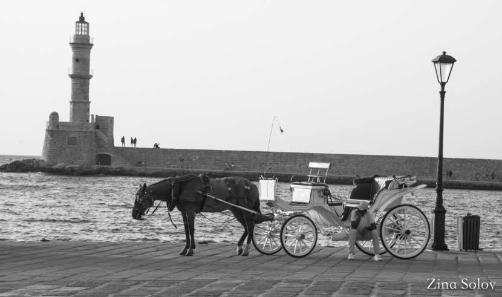
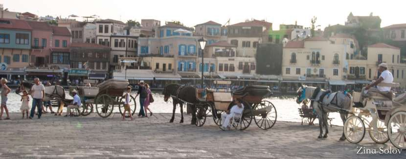
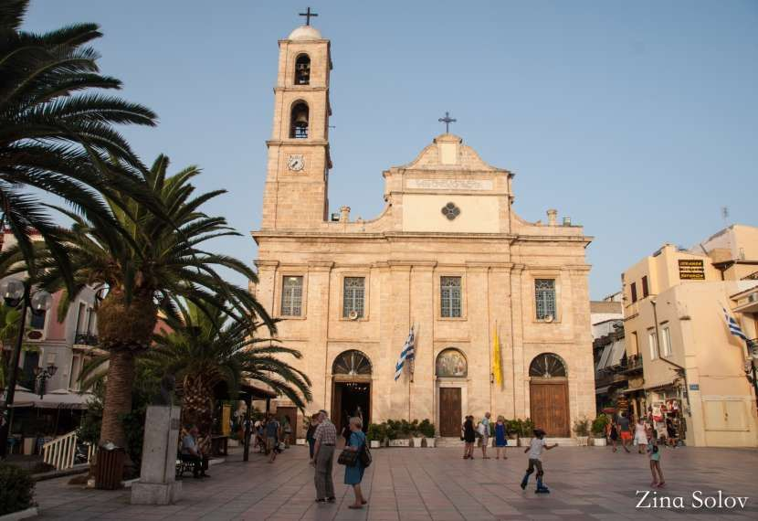
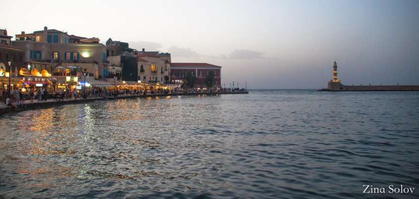
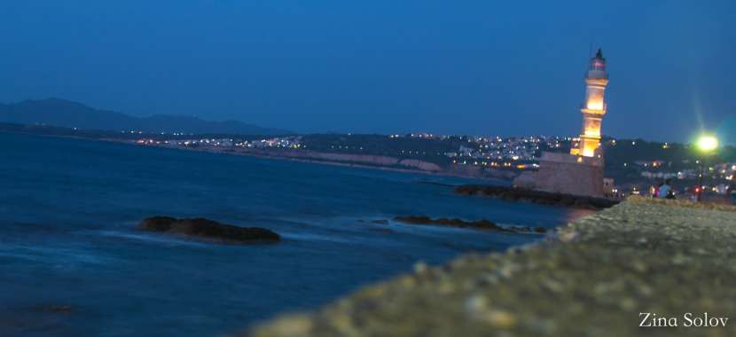
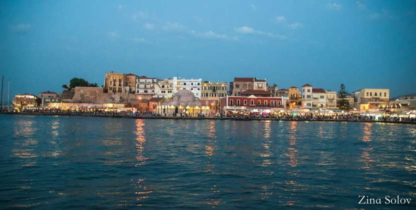
יום 6- 26.7.17- החוף הכי שווה באי
החלטנו לבקר הבוקר בחוף אפראתא (Afrata) שהומלץ לנו ע"י פקיד הקבלה, מדובר בנסיעה קצרה יחסית כך שהחלטנו לעשות היום יום חופים קליל.
לאחר ארוחת הבוקר אנחנו יוצאים לכיוון, מהרגע שעבורים את העיירה Kolymvari הכביש מתחיל להתפתל לאורך הצוק כך שמצד ימין נשקף ים בצבע טורקיז שרק מזמין אתכם לצלול פנימה ומצד שמאל הרים חומים ומידי פעם עצי זית. לאורך הכביש פזורים ספסלים חמודים בצבע כחול המשקיפים על המים.
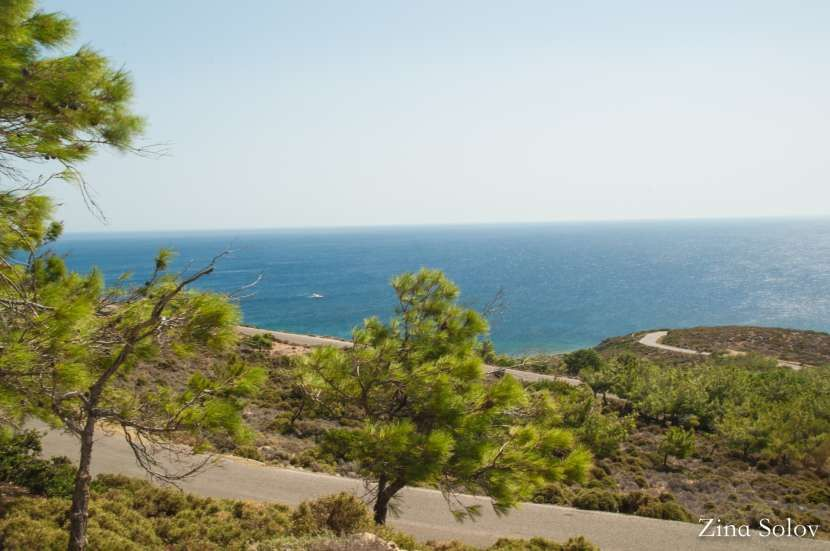
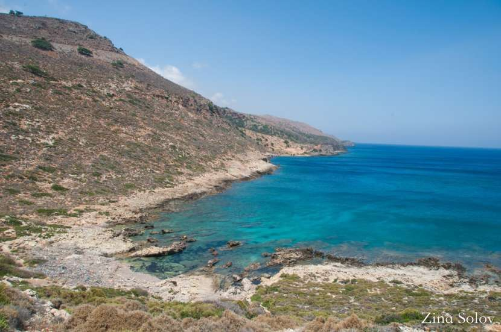
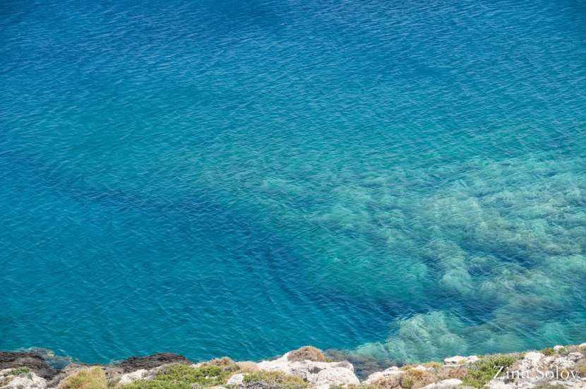
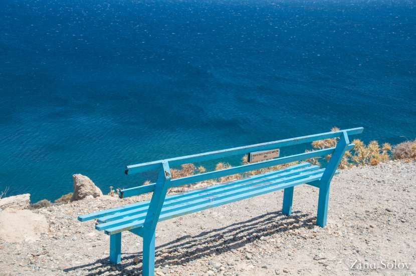
לאחר אין ספור עצירות צילום, אנחנו מגיעים לעיירה קטנטנה, כדי להגיע לחוף אנחנו חוצים את העיירה ושפתאום נגלים לפנינו שני צוקים ענקיים וביניהם מרווח קטנטן, במרווח הקטנטן הזה נמצא החוף.
אנחנו יורדים ומגיעים לחניה קטנה, במקום מסעדה של מקומיים, שירותים נקיים, שמשיות ומיטות שיזוף בעלות של 1 יורו (יותר נכון אתם קונים כוס מיץ תפוזים סחוט והמיטה בחינם :) ). החוף עצמו ממש קטן וסלעי מאוד (תביאו נעליים כי פשוט יהיה קשה להיכנס למים), אבל משגע. בניגוד לשאר החופים, עצם השהיה ברצועת קרקע בין שני צוקים נישאים וברקע הים הטורקיז מהווה חוויה מטורפת.
אנחנו מיד נכנסים לטבילה ואיזה הפתעה נעימה מצפה לנו! בגלל שהחוף בעצם בין שני צוקים, אחרי שעוברים את האבנים מיד מגיעים למים עמוקים, צלולים וקרירים, ולא רק, אלא יש על הקרקעית שוניות והמון דגים ששוחים מתחת, המקום פשוט גן עדן לשנירקול!!!
כשאנחנו יוצאים להתרעננות (מיץ התפוזים הסחוט בדיוק הגיע) אנו מגלים שהמקום מהווה אטרקציה בקרב לומדי הצלילה, ולמקום מגיעות קבוצות רבות כדי לצלול.
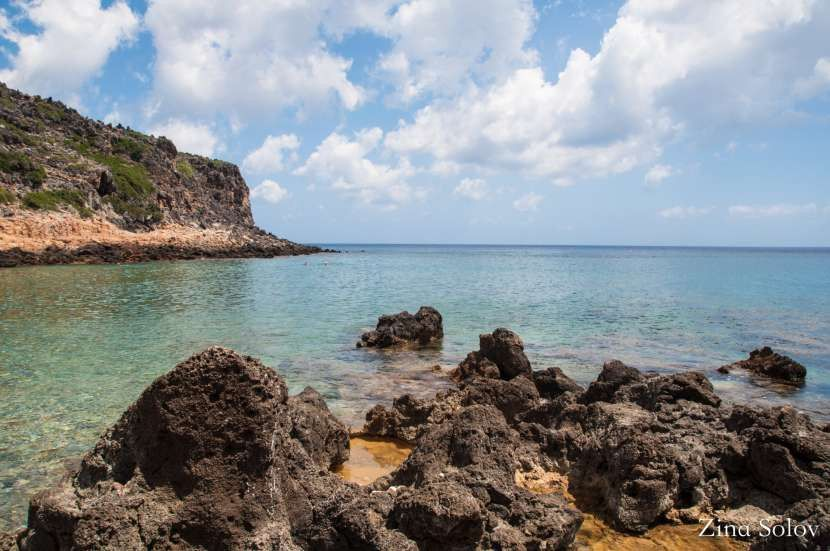
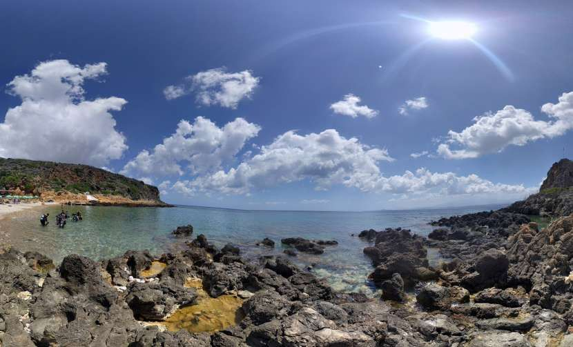
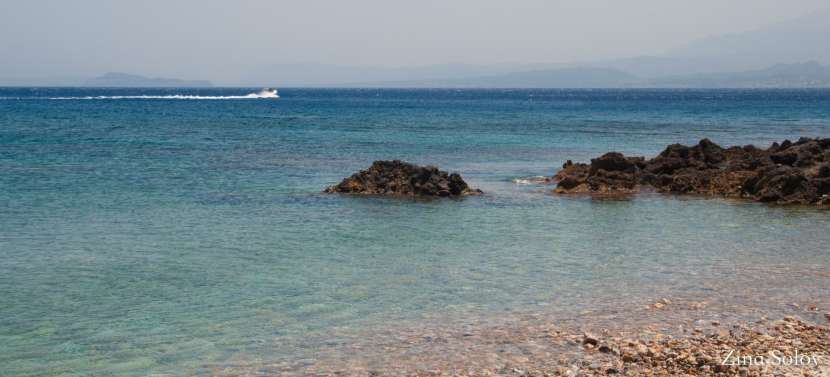
אנחנו מבלים כ-4 שעות בחוף, נהנים מכל רגע עד שהרעב מכה בנו. החלטנו לאכול בעיירה Kolymvari, עצרנו במסעדה חמודה על הנמל הפצפון של העיירה ומשם נסענו לשנת צהריים בחדר.
לאחר מנוחה החלטנו לנסות לראות את השקיעה באחד משני החופים המומלצים שטרם ביקרנו- באלוס או פאלאסרנה, בגלל שהיינו קצת עייפים החלטנו לדחות את הנסיעה לבאלוס למחר (בכל זאת 40 דקות נסיעה בכביש עפר) ושמנו פעמנו לחוף Falassarna- הידוע בזכות השקיעות המרהיבות כמו גם המראה המיוחד של המים הודות לאלמוגים החיים כאן.
הדרך לחוף עוברת דרך העיירה קיסאמוס שממנה יוצאות מעבורות לחופים והאיים הסמוכים. לאחר כחצי שעה אנחנו מתקרבים לחוף אולם לאכזבתנו מזג האוויר משתנה. השמש מתחבאת מאחורי עננים מאיימים וכל הנוף מקבל זווית קודרת. אנחנו בכל זאת מגיעים לחוף, אך לא נשארים לשחייה בגלל הגלים (דומה מידי לחופי הארץ).
מסתבר שיש שני חופים עם אותו שם, במרחק 5 דקות נסיעה מהחוף הגדול, יש חוף קטן, אנחנו נוסעים לבדוק גם אותו, ההגעה אליו היא מלמעלה, דרך גבעה קטנה ומסעדה, אנחנו מסתפקים בתמונה וחוזרים לרכב, מגז האוויר קודר מידי בשבילנו (למרות שחם). אנחנו עושים הפסקת קפה ועוגה בטברנה שצופה על החוף ומשם חוזרים למלון, איך שאנחנו עוברים את קיסאמוס השמש שוב מגיחה ונראה כאילו לא נעלמה בכלל, אין גם זכר לעננים…
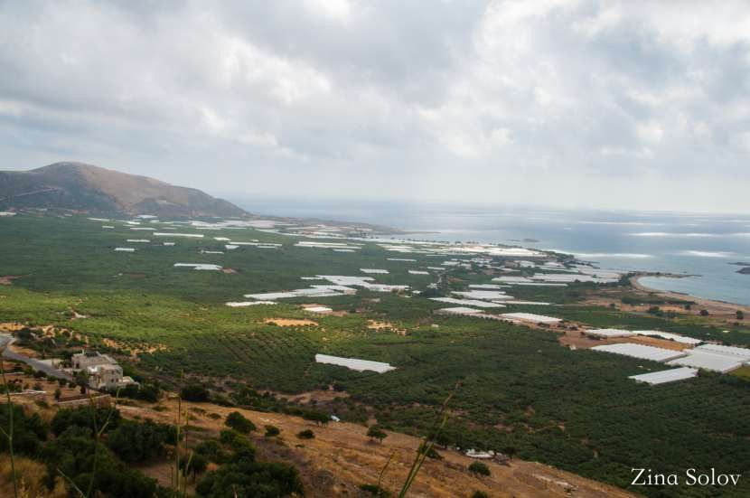
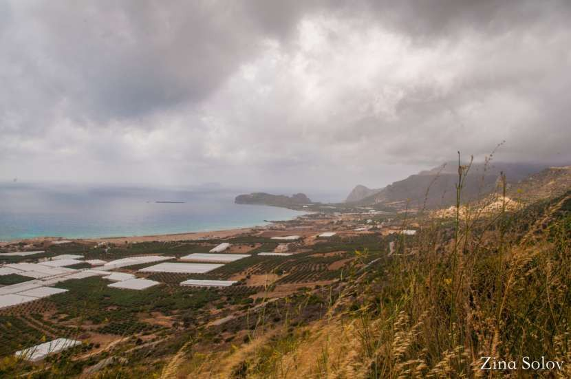
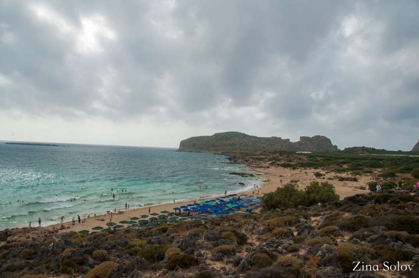
את הערב אנחנו מבלים בטברנה של העיירה שנמצאת 2 דקות הליכה מהמלון. האוכל שם פשוט מעולה!
יום 7- 27.7.17- יום אחרון
בגלל שכלכך נהיננו אתמול מהחוף באפראתא, אנחנו מחליטים לבלות שם את שעות הבוקר גם היום. וכמו אתמול החוף לא איכזב. גם את ארוחת הצהריים אכלנו באחת המסעדות בעיירה Kolymvari ונסענו לשנת צהריים במלון.
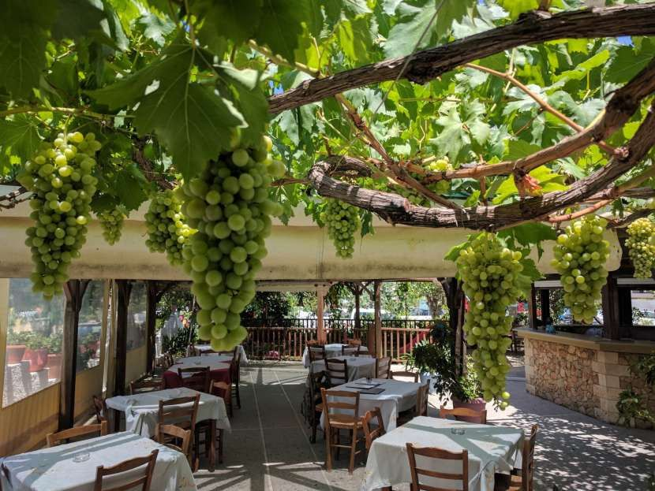
לקראת שלוש אחר הצהריים שמנו פעמנו לחוף הכי מפורסם בכרתים- באלוס (Balos). ניתן להגיע לחוף ברכב בנסיעה של כ-40 דקות בכביש עפר ומשם לרדת עוד כשני קילומטר לחוף עצמו, או שניתן לקחת מעבורת מהעיירה קיסאמוס שעוברת גם באיים הסמוכים בעלות של 27 יורו לאדם (טיול של יום שלם כי היציאה היא ב8:00, 10:00 ו-13:00 הכי מאוחר). לאחר התלבטויות רבות החלטנו ללכת על האופציה של הרכב כדי להיות גמישים מבחינת זמנים, וכך יצאנו לדרך. שוב אנו חולפים על פני קיסאמוס, והפעם השמש זורחת ואין עננים בשמיים.
אנחנו נכנסים לשמורה (באלוס נחשבת כשמורת טבע) ומשלמים יורו אחד עבור כניסה ומשם מתחילים בנסיעה בכביש עפר זוועתי המתפתל לאורך הצוק, מצד ימין הים הכחול מצד שמאל צוקים חומים, אנחנו חולפים על פני כנסיה קטנטנה שמשתלבת בנוף ולאחר כחצי שעת נסיעה מגיעים למתחם עמוס ברכבים, עד כדי כך שמהרכב האחרון ועד לחניה עצמה יש כשני קילומטר נסיעה. החלטנו להמשיך עד החניון וטוב שכך כי באמת יש מקומות חניה, כך שאל תחנו אחרונים אלא תבדקו מה קורה מקדימה.
יש לי פיפי מטורף, כך שאני מנחמת את עצמי שבחניה בטוח יש שירותים, אולם לאכזבתי המרה הם תקולים, השירותים הקרובים ביותר הם בחוף (2 קילומטר הליכה), פניתי כבר לאופציית השירותים בטבע אולם בכל חשוף, אין אפילו גבעה קטנה להסתתר... בסוף אלתרנו לי מסתור ולאחר שהשלפוחית התרוקנה יכולתי שוב לחשוב בבהירות.
משום מה הייתה לשנינו ההרגשה שאנחנו לא הולכים לרדת עד החוף, ואכן אפילו לא טרחנו לקחת מגבות. צעדנו כקילומטר עד התצפית על הלגונה, שבהחלט מרשימה ביופייה, אולם זה הספיק לנו, לא היה לנו החשק לרדת מטה ואז לעלות חזרה. בדיעבד אולי היינו צריכים לקחת את המעבורת וכך לנצל טוב יותר את היום...טוב צריך להשאיר משהוא לפעם הבאה…
את הערב בילינו שוב בטברנה של העיירה. למחרת השקמה מאוד מוקדמת ונסיעה של שלוש שעות עד נמל התעופה (בשעות הבוקר המאוד מוקדמות לקח לנו שעתיים :)).
זהו תם הטיול, מקווה שנהנתם.